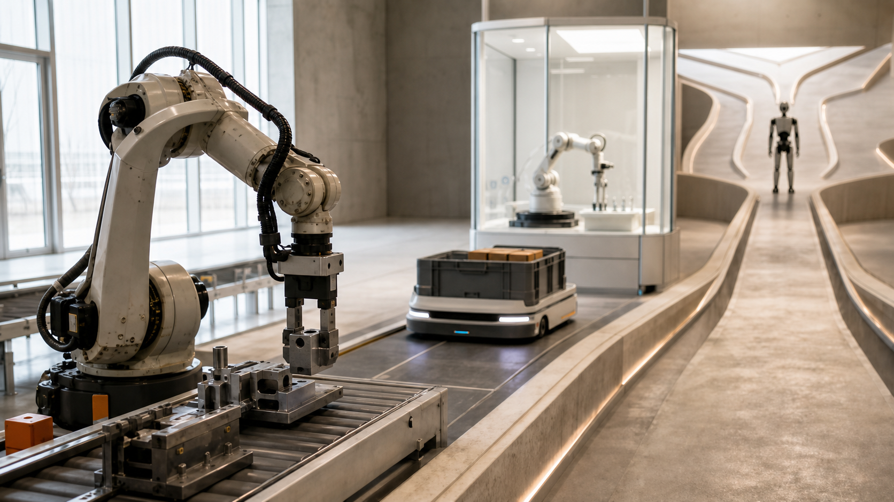
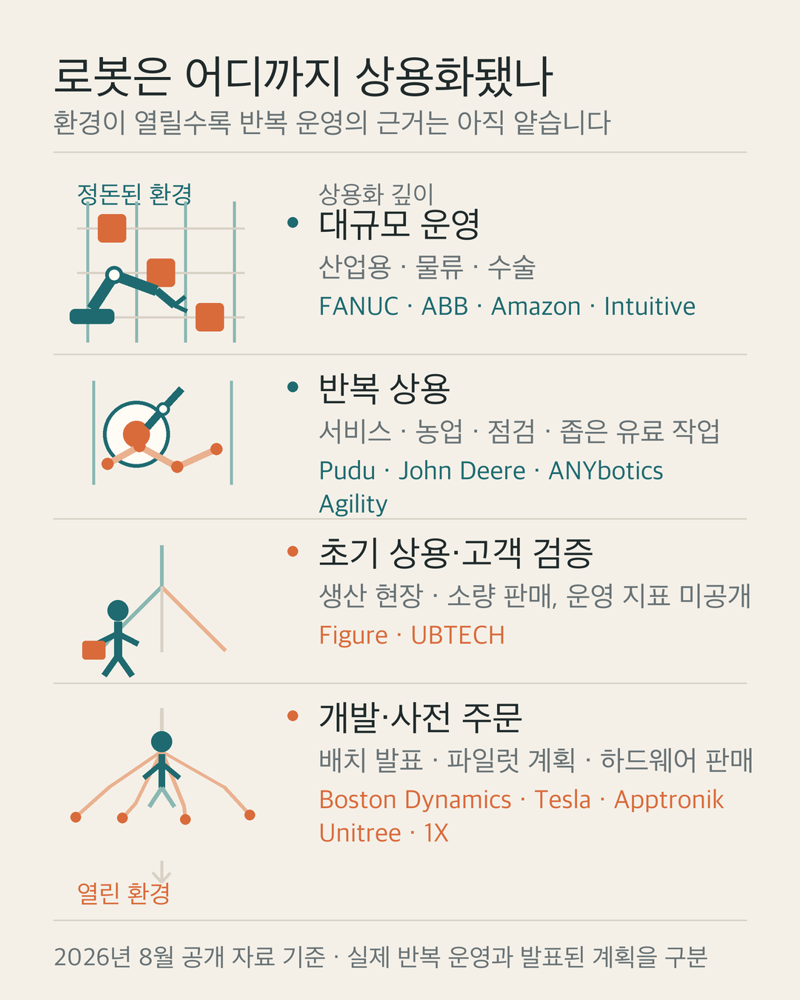

안녕하세요. dev.log입니다.
로봇 뉴스에는 사람처럼 걷는 휴머노이드가 자주 등장합니다. 그래서 로봇 시장도 Tesla Optimus, Figure, Atlas가 이끄는 것처럼 보이기 쉽습니다. 실제 산업의 중심은 조금 다릅니다. 자동차를 용접하는 팔, 창고 선반을 옮기는 이동 로봇, 의사의 손을 보조하는 수술 로봇은 이미 매일 반복해서 일하고 있습니다.
현재 로봇 시장에는 한 명의 종합 우승자가 없습니다. 작업 환경이 좁고 반복적일수록 상용화가 깊고, 사람 공간의 온갖 변수를 견뎌야 하는 범용 휴머노이드는 이제 제한된 현장 검증을 넘어서는 중입니다. 기업의 수준도 멋진 동작 하나보다 어디에서 얼마나 오래, 사람의 도움을 얼마나 적게 받고 일했는지로 봐야 합니다.

휴머노이드 밖의 더 큰 로봇 시장
국제로봇연맹(IFR)의 World Robotics 2025에 따르면 2024년 전 세계 공장에 산업용 로봇 54만 2천 대가 새로 설치됐습니다. 가동 중인 재고는 466만 4천 대에 이릅니다. 전문 서비스 로봇도 같은 해 약 20만 대가 판매됐고, 그중 운송·물류가 10만 2,900대로 절반을 넘었습니다.
이 숫자에 휴머노이드 열풍을 겹쳐 놓으면 이 글에서 비교할 여섯 영역이 보입니다.
| 시장 | 주로 맡는 일 | 현재 상용화 깊이 | 대표 기업 |
|---|---|---|---|
| 산업용 팔·협동로봇 | 용접, 도장, 조립, 기계 투입 | 대규모 운영 | FANUC, ABB, Yaskawa, KUKA, Universal Robots |
| 창고·물류 | 선반·박스 이동, 분류, 상품 집기 보조 | 대규모 운영 | Amazon Robotics, Symbotic, Locus Robotics |
| 수술·의료 | 의사의 정밀 수술과 내시경 보조 | 대규모 운영 | Intuitive Surgical, Medtronic |
| 상업 서비스 | 청소, 음식·물품 배달, 안내 | 반복 상용 | Pudu Robotics |
| 농업·시설 점검 | 경운, 순찰, 열·가스·소음 점검 | 작업별 반복 상용 | John Deere, ANYbotics, Boston Dynamics |
| 범용 휴머노이드 | 사람용 공간의 운반, 조립, 가사 | 초기 상용·고객 검증 | Agility, Figure, Boston Dynamics, UBTECH, Tesla, Unitree, 1X |
표의 상용화 깊이는 시장 규모 순위가 아닙니다. 같은 작업을 실제 현장에서 반복하는 정도를 뜻합니다. 수술 로봇도 스스로 수술하는 기계가 아니라 의사의 동작을 정밀하게 전달하는 보조 시스템입니다. 이름에 AI나 자율이라는 단어가 붙어도 사람이 맡기는 범위는 제품마다 크게 다릅니다.
로봇의 현재를 가르는 네 가지 질문
기업마다 공개하는 숫자가 다릅니다. FANUC은 누적 출하, Intuitive는 설치 대수와 시술 건수, Figure는 공장 가동 시간, Tesla는 생산 계획을 내놓습니다. 서로 다른 숫자를 그대로 세우면 출하와 자율성, 공장 건설과 고객 가치가 뒤섞입니다.
이번 지도에서는 네 질문을 같은 순서로 적용했습니다.
- 환경 - 펜스 안 공장처럼 정돈된 곳인가, 집처럼 계속 바뀌는 곳인가?
- 개입 - 처음 설정한 뒤 스스로 반복하는가, 원격 조작이나 잦은 복구가 필요한가?
- 배치 - 시연·파일럿·유료 작업·대규모 운영 중 어디에 있는가?
- 확장 - 새 작업을 맡길 때 설비와 프로그램을 얼마나 다시 만들어야 하는가?
이 기준에서 대규모 운영은 가장 오래 검증된 단계입니다. 반복 상용은 실제 고객 가치가 있지만 작업 범위가 좁습니다. 초기 상용·고객 검증은 생산 현장이나 소량 판매까지 들어갔으나 시간당 처리량, 개입률, 유지비가 충분히 공개되지 않은 단계입니다. 개발·사전 주문은 제품과 생산 계획은 있어도 외부 반복 운영 근거가 부족합니다.

산업용 로봇이 쌓은 운영 경험
산업용 로봇은 정해진 위치에서 같은 궤적을 빠르고 정확하게 반복합니다. 범용성은 낮지만, 용접 품질과 가동률처럼 공장이 돈을 버는 지표에서는 가장 깊게 검증됐습니다.
| 기업 | 특화 영역 | 공개된 현재 위치 | 향하는 곳 |
|---|---|---|---|
| FANUC | 자동차 용접·핸들링, 공작기계 연동 | 2023년 누적 출하 100만 대 | 비전·힘 센서와 AI로 작업 범위 확대 |
| ABB | 산업용 팔, 기계 자동화, 자율이동로봇 | 고정형과 이동형을 함께 공급하는 통합 포트폴리오 | 보는 눈과 이동성을 갖춘 AI 자동화 |
| Yaskawa | MOTOMAN 로봇, 서보·모션 제어 | 공장 자동화의 오랜 대형 공급자 | MOTOMAN NEXT와 설비 데이터를 잇는 자동화 |
| KUKA | 자동차 생산라인, 물류 시스템 | 회사 발표 기준 55만 대 이상 설치 | 규칙 기반 설비에 물리 AI를 더하는 Automation 2.0 |
| Universal Robots | 사람 곁에서 일하는 협동로봇 | 2025년 누적 판매 10만 대 이상 | 중소 제조업도 쉽게 설치하는 AI·파트너 생태계 |
이들의 경쟁력은 로봇 팔 한 대의 운동 성능으로 끝나지 않습니다. 안전 규격, 주변 장치, 공정 설계, 고장 대응, 수십 년 유지보수가 묶여 있습니다. 신생 휴머노이드 기업이 뛰어난 손과 AI를 보여도 공장 전체를 안정적으로 운영하는 경험까지 단번에 따라잡기 어려운 이유입니다.
기존 강자도 그대로 머물지는 않습니다. KUKA는 확실한 규칙으로 움직이는 기존 자동화를 Automation 1.0으로 부릅니다. 여기에 주변을 보고 실제로 행동하는 물리 AI를 더한 단계가 Automation 2.0입니다. ABB와 Yaskawa도 비전, 이동 로봇, 학습 기능을 기존 제어 기술에 붙이고 있습니다. 잘 검증된 산업용 팔의 작업 반경이 덜 정돈된 공정까지 넓어지고 있습니다.
반복 운영 수치로 본 창고·수술 로봇
물류 로봇은 바닥과 통로가 정해져 있고 작업량이 많습니다. 새로운 자율 기술을 시험하면서도 처리량과 비용을 바로 계산할 수 있는 환경입니다. Amazon Robotics는 2025년 6월 300곳 넘는 시설에 100만 번째 로봇을 배치했습니다. 선반을 옮기던 초기 로봇에서 사람 주변을 다니는 Proteus, 촉각으로 물건을 다루는 Vulcan, 전체 동선을 조율하는 DeepFleet로 범위를 넓혔습니다.
Locus Robotics는 2026년 3월 고객 작업 누적 70억 픽을 기록했습니다. 다만 이 숫자는 사람이 물건을 집고 로봇이 운반한 협업 작업까지 포함합니다. Symbotic은 개별 로봇보다 팔레트 입고부터 보관·선별·재팔레타이징까지 창고 시스템 전체에 집중합니다. 물류의 선두가 가장 사람 같은 로봇이 아니라 시설 전체의 흐름을 가장 안정적으로 묶는 회사인 까닭입니다.
수술실은 규제와 훈련이 진입장벽입니다. Intuitive Surgical의 2025 연차보고서에 따르면 전 세계에 da Vinci 시스템이 1만 1,100대 넘게 설치됐고, 2025년에 310만 건 넘는 da Vinci 시술이 이뤄졌습니다. 이 분야의 기술 수준은 완전자율보다 의사의 조작을 얼마나 정밀하고 일관되게 전달하며, 병원이 안전하게 반복 운영할 수 있느냐에 있습니다.
Medtronic Hugo는 2025년 12월 미국 비뇨기 수술용 FDA 허가를 받았습니다. 목표는 모듈형 장비와 연결형 수술실로 접근성을 넓히는 것입니다. 두 회사의 경쟁은 로봇 팔의 자유도만이 아니라 적응증, 의사 교육, 소모품, 데이터, 병원 운영 비용에서 벌어집니다.
식당·농지·위험 시설을 맡은 전용 로봇
상업 서비스 로봇은 좁은 문제를 값싸게 푸는 쪽으로 성장했습니다. Pudu Robotics는 85개 이상 국가·지역에 13만 대 넘게 출하했다고 밝힙니다. 배달·청소·산업 운반처럼 사람의 손 모양이 필요 없는 작업을 먼저 넓혔습니다. 정해진 일을 오래 반복하면 고객에게는 이미 쓸모 있는 로봇입니다.
바퀴가 갈 수 없는 곳에서는 다리가 의미를 얻습니다. ANYbotics의 시멘트 공장 사례에서 ANYmal은 16개월간 6개 층을 다니며 450개 지점에서 3만 3천 회 넘게 점검했습니다. 열화상·음향·가스 센서로 사람이 접근하기 위험한 설비를 살핍니다. Boston Dynamics는 Spot을 산업 점검에, Stretch를 창고의 상자 하역에 맞춰 판매합니다.
농업에서는 John Deere의 자율 트랙터가 정해진 농지의 경운을 운전자 없이 수행합니다. 집안일을 두루 하는 로봇보다 범위는 좁지만, 흙먼지와 햇빛 속에서 큰 장비를 제어하는 실제 문제를 해결합니다. 전문 로봇의 수준은 모양보다 작업 환경과 실패 비용에 맞춰 판단해야 합니다.
고객 현장에 들어선 휴머노이드의 현재
휴머노이드의 논리는 분명합니다. 공장과 집이 사람의 키, 손, 계단, 문을 기준으로 만들어졌으니 로봇도 비슷한 몸을 가지면 시설을 뜯어고치는 비용을 줄일 수 있습니다. 하지만 두 발 걷기, 물체 인식, 손 조작, 배터리, 안전을 동시에 만족해야 합니다. IFR도 범용 가정용 휴머노이드의 대규모 채택이 단기나 중기에 오지 않을 수 있다고 봅니다.
2026년 8월 공개 근거로 보면 휴머노이드 기업의 위치는 다음처럼 갈립니다.
| 기업 | 가장 강한 증거 | 현재 단계 | 지금의 목표 |
|---|---|---|---|
| Agility Robotics | Digit가 GXO 유료 배치에서 토트 10만 개 이상 이동 | 반복 상용 | 협력 안전성을 갖춘 물류·제조 로봇군 확대 |
| Figure | 회사 발표 기준 BMW에서 1,250시간, 부품 9만 개 이상 적재 | 초기 상용·고객 검증 | Figure 03과 Helix로 더 긴 제조·가사 작업 수행 |
| Boston Dynamics | 제품형 Atlas의 2026년 물량을 Hyundai·Google DeepMind 배치에 할당한다고 발표 | 개발·사전 주문 | 부품 순서화에서 기계 투입·주문 조립로 확대 |
| UBTECH | 회사 발표 기준 2025년 전신형 지능형 휴머노이드 1,079대 판매 | 초기 상용·고객 검증 | Walker S2 다중 로봇 공정과 24시간 운영 안정화 |
| Tesla | 2026년 7월 Fremont 생산 시설 건설 중, 연내 생산 예상 | 개발·사전 주문 | Gen 3 범용 로봇의 대량 생산 |
| Apptronik | Jabil 공장의 검사·분류·키팅 파일럿 계획 | 개발·사전 주문 | Apollo 생산망과 현장 검증 동시 구축 |
| Unitree | G1 하드웨어를 13,500달러부터 판매하지만 고객 반복 작업 근거는 미공개 | 개발·사전 주문 | 저가 하드웨어와 개발자 데이터 생태계 확대 |
| 1X | NEO 2026 배송 사전 주문, 기본 자율성과 원격 전문가 모드 | 개발·사전 주문 | 가정 배치에서 학습해 자율 작업 확대 |
Agility와 Figure는 제한된 한 가지 작업이라도 고객 생산 흐름 속에서 반복했다는 점이 앞섭니다. Figure가 공개한 1,250시간과 9만 개 부품은 회사 발표이지만, 편집된 한 번의 영상보다 훨씬 유용한 근거입니다. Agility의 토트 이동도 범용 가사 능력은 증명하지 않지만 기업이 비용을 내는 작업에 들어갔다는 의미가 있습니다.
UBTECH는 양산 속도에서 강한 신호를 냈습니다. 다만 출하 1,079대가 모두 사람 개입 없이 생산성을 낸다는 뜻은 아닙니다. Tesla는 대규모 생산 목표가 크지만 2026년 8월 현재 공개 근거는 공장 건설과 내부 개발에 더 가깝습니다. 생산라인의 설계 용량, 실제 생산량, 외부 고객의 반복 작업은 서로 다른 단계입니다.
Unitree는 다른 방식으로 중요합니다. G1의 가격을 13,500달러부터 제시해 대학과 개발사가 휴머노이드 하드웨어를 만질 문턱을 낮췄습니다. 회사도 제품 페이지에서 산업이 초기 탐색 단계이며 일부 기능이 아직 개발 중이라고 밝힙니다. 낮은 가격과 뛰어난 운동 제어는 생태계의 강점이지만, 바로 고용할 수 있는 자율 작업자라는 뜻은 아닙니다.
가정용을 내건 1X NEO는 더 어려운 시험대에 섰습니다. 집은 물건 위치와 사람 행동이 계속 바뀌고, 안전과 사생활 요구도 높습니다. NEO는 초기 구매자에게 기본 자율성을 제공하면서 복잡한 작업에는 예약형 원격 전문가 모드를 둡니다. 이 설계는 현실적인 학습 경로이지만, 현재 능력과 장기 자율성의 차이도 보여 줍니다.
로봇 강국을 가른 공급망과 첫 고객
로봇 경쟁은 국가 대항전 하나로 정리되지 않습니다. 공급망과 첫 고객이 다르기 때문입니다.
- 일본·유럽은 FANUC, Yaskawa, ABB, KUKA, Universal Robots처럼 모터·제어·안전·통합·서비스망이 강합니다. 목표는 기존의 높은 신뢰성을 유지하며 비전과 AI로 작업 변경 비용을 낮추는 것입니다.
- 미국은 Amazon의 거대한 내부 물류망, Intuitive의 의료 생태계, Figure·Agility·Apptronik·Tesla의 AI 자본이 결합합니다. 자체 공장이나 대형 고객을 학습장으로 확보하는 힘이 큽니다.
- 중국은 세계 최대 제조 수요와 부품 공급망, 낮은 가격, 빠른 양산이 맞물립니다. 2024년 세계 산업용 로봇 신규 설치의 54%가 중국에서 이뤄졌고, 중국 업체의 자국 시장 점유율은 처음 57%에 도달했습니다. Pudu의 서비스 로봇, Unitree의 저가 플랫폼, UBTECH의 휴머노이드 출하가 이 경로를 보여 줍니다.
- 한국은 제조업 종사자 1만 명당 산업용 로봇 1,220대로 세계에서 로봇 밀도가 가장 높습니다. 대기업 공장을 초기 시장으로 쓸 수 있다는 뜻이기도 합니다. Hyundai는 2028년 Atlas를 반복 부품 순서화에 투입하고 연 3만 대 생산체계를 갖추겠다고 밝혔습니다. Samsung은 Rainbow Robotics 지분을 35%로 늘리고 AI·소프트웨어와 협동·양팔·이동 로봇을 결합하는 미래로봇추진단을 만들었습니다.
한국의 기회는 또 하나의 걷기 영상을 만드는 데만 있지 않습니다. 자동차·반도체·배터리 공장에서 안전성과 수율, 유지보수까지 검증한 작업 데이터를 쌓고, 부품과 시스템 통합을 수출 가능한 제품으로 묶는 데 있습니다. Hyundai의 Boston Dynamics와 Samsung·Rainbow Robotics의 조합은 이 경로를 택했지만, 계획이 실제 외부 고객 매출로 이어지는지는 더 지켜봐야 합니다.
출하량 다음에 확인할 다섯 숫자
앞으로 3~5년 동안 휴머노이드가 전문 로봇의 영역을 얼마나 가져올지는 다섯 숫자에서 드러납니다.
- 사람 개입 없는 연속 작업 시간 - 시연 성공률보다 복구 없이 한 교대조를 버티는지가 중요합니다.
- 시간당 처리량과 가동률 - 같은 일을 하는 사람·전용 자동화와 비교해 생산성이 나와야 합니다.
- 새 작업 학습 시간 - 공정이 바뀔 때 며칠 안에 재배치되는지, 다시 프로그래밍해야 하는지 봐야 합니다.
- 고장·안전·서비스 기록 - 사람 곁에서 멈추고 복구하며 부품을 공급하는 체계가 대량 배치의 문턱입니다.
- 총소유비용 - 구매가격에 원격 조작, 통합, 충전, 유지보수, 멈춘 시간까지 더해야 합니다.
이 지표가 공개되기 전에는 몇 대를 만들겠다는 목표보다 한 고객이 몇 달 동안 어떤 일을 반복했고 왜 더 샀는가가 더 강한 근거입니다. 잘 걷는 로봇과 돈을 버는 로봇 사이에는 공정 통합과 서비스라는 긴 구간이 남아 있습니다.
현재의 로봇 시장을 한 문장으로 줄이면 이렇습니다. 오늘의 선두는 작업마다 다르고, 내일의 경쟁은 전용 로봇의 신뢰성과 휴머노이드의 유연성이 어디에서 만나는지에 달려 있습니다. 다음 로봇 뉴스를 볼 때는 회사 이름보다 작업, 고객, 반복 시간, 사람 개입부터 확인해 보시기 바랍니다.